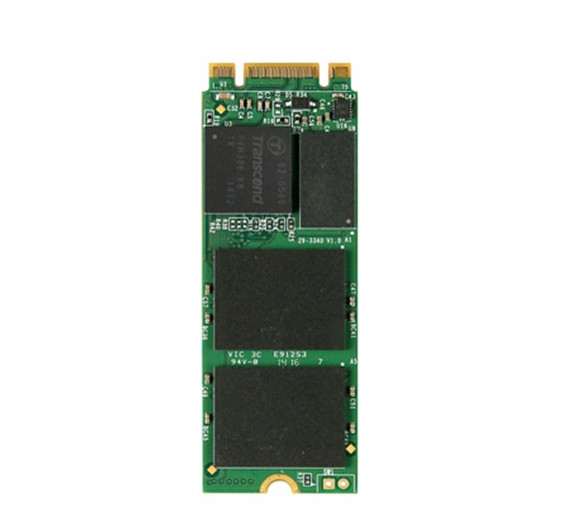
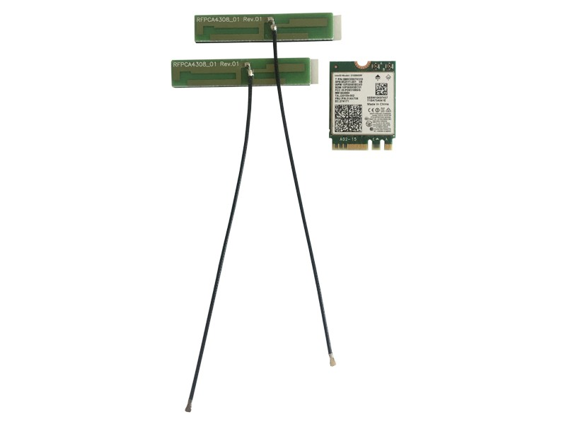

Official Accessories
In the UDOO Shop you can also find some accessories for the UDOO VISION.
M.2 Modules
M.2 SSD Transcend MTS600
- Capacity: 128GB/256GB/512GB
- Dimensions: 60.0mm × 22.0mm × 3.58mm (2.36" x 0.87" x 0.14")
- Weight: 6g (0.21 oz)
- Storage Media: MLC NAND Flash memory
- Operating Voltage: DC 3.3V±5%
- Operating Temperature: 0°C (32°F) to 70°C (158°F)
For more info about this SSD module you can check the official Transcend page
M.2 Wi-Fi Intel dual band AC + BT 4.2 5GHz + adhesive antenna
The package includes:
- Wi-Fi AC and Bluetooth 4.2 module
- Intel® Dual Band Wireless Wi-Fi AC and Bluetooth 4.2 module (AC3168)
- Dimensions: 4.9 x 3.5 x 0.4 inches
- Weight: 8.5g (0.3 oz)
- M.2 compatible RF micro coax type connector
- 2x Antennas
- IPEX MFH-4 connector
- 10cm IPEX cable
- Adhesive backing on aerial plates
For more info about this WiFi/BT module you can check the datasheet from the Intel website
Heads up! You need both the antennas to make the module works properly. Connect an antenna to the Main connector to enhance Wi-Fi signal. Connect an antenna to the Aux connector to enhance Bluetooth and BluetoothLE signal.
Cables and Others

CPU fan for UDOO VISION heatsink
You don’t need a CPU fan for your ordinary activities, but the fan will help you out with complex projects that require a lot of power.
The CPU fan is applied on the bottom part of the board. It has 3 pins and you can set up thresholds inside the BIOS to automate it. It’s pretty much plug-and-play.
The fan is provided with the UDOO VISION itself for those that bought the board from Kickstarter, but it will come soon in the official shop!
Cables and Power Supply
- MiniDP++ to HDMI - The miniDP++ to HDMI Passive Adapter lets you connect the UDOO VISION to a high definition (up to 1080p) monitors and projectors
- MiniDP++ to DP - The 2MT miniDP++ to DP Adapter lets you connect the UDOO VISION to a high definition (up to 4k) monitors and projectors
- SATA data and power cables for UDOO VISION - SATA data and power cables for UDOO VISION (CN18 and CN30 connectors)
- Power Supply EU 12V 3A for UDOO VISION (EU or USA)
- OUTPUT: 12V, 3A
- Jack Dimensions: (Inner diameter) 2.1mm - (Outer diameter) 5.5mm.